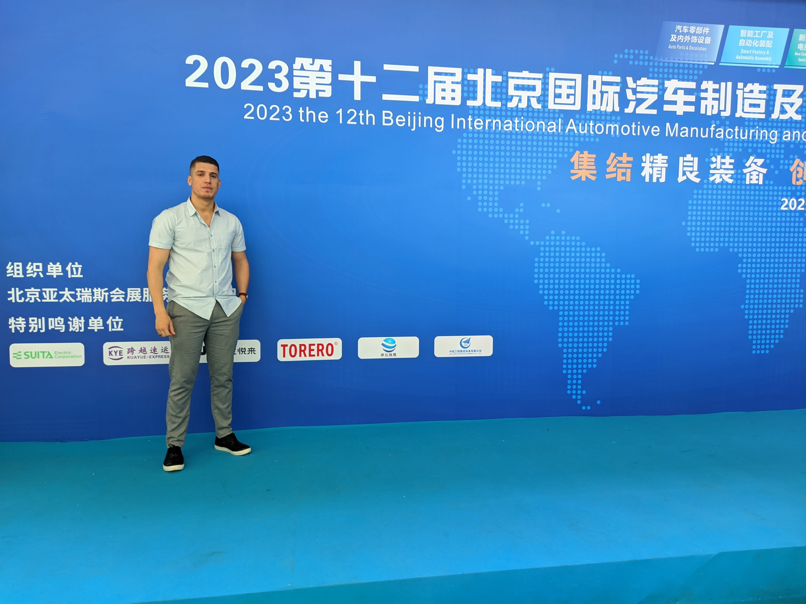

Abdenacer Naouri
PhD in Computer Science
nacer.naouri@gmail.com
Recent graduate with a PhD degree in Computer Science from the University of Science and Technology of Beijing, bringing a blend of fieldwork expertise and data-analysis proficiency in IoT, cloud computing, fog computing, edge computing, federated learning, Social Internet of Things, and more. My passion has recently evolved towards AI application, where I aspire to contribute to the development of innovative modeling techniques for computing ecosystems.